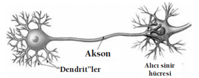
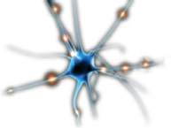

Ankara’daki liselerden birinde “Beynimizi etkin kullanabilme becerileri” adlı bir seminerdeydim. “Beyin ve farkındalık bize ne kazandırır?”, “Beynin işleyişini öğrenmekle neleri değiştirebiliriz?”gibi konuları işliyordum. Öğrencilerden birisi, “Biyoloji dersinde beyni öğrendik ama bizde hiçbir şey değişmedi. Şimdi anlattıklarınızdan sonra ne değişecek ki?” diye sordu.
Öğrencinin sorusuna bir anekdot üzerinden cevap verdim. “Varsayın ki, maden ocağından iki insan çıkıyor: Birisinin üzeri tertemiz, diğerininki ise kömür karası içinde…Sizce bunlardan hangisinin yıkanması lâzım?”
Öğrenciler, kendilerinden emin bir şekilde: “Elbette, kirli olan” diye cevap verdiler. Tebessümle cevapladım: “Eğer beynin işleyiş ve düşünce süreçlerini kavramış olsaydınız bu soruya cevap vermeden önce şunu soracaktınız;“Nasıl oluyor da bir maden ocağından çıkan iki kişiden birinin üzeri tertemiz iken diğerininki kirli olabiliyor?”
Düşünce süreçlerinin farkına varırken bu mantığı kurabilen her biriniz, gereken fedakârlığı gösterirseniz, dâhi bir beynin sahibi olabilirsiniz... Bunun için; önce düşünme ve öğrenme anında beyinde başlayan sürece tanık olacağız. Sonra dış dünyadan gelen verilerin beynine nasıl ulaşıp, beyninde nasıl işlendiğini anlayacağız. Sonra işlediğin bu verilerin, zihninde sana özgün temsil ediliş biçimini öğreneceğiz. Sonra öğrenme aşamalarında yaşadığın değişimin farkına varıp bunları nasıl belleğine kaydettiğini anlayacağız.
Son olarak da en hızlı, en kolay ve en kalıcı öğrenmeyi; zihnimizde nasıl modelleyebileceğimizi kavrayacağız.İkinci bölüm başlıyor!
Düşünme ve Öğrenme Anında
Beyinde Neler Oluyor?
Öğrenme, beyin dilinde nöron ağı oluşturmaktır. Bu işlemi, beş duyu kanalınla dışarıdan aldığın sinyallerin beynindeki nöronlar ile ilişki kurarak hafızana yerleştirilmesi olarak düşünebilirsin.

Nöron hücreleri arasındaki Akson-Dentrit bağlantısının (sinaps) kurulması işlemini, evler arasındaki kablo ile telefon hattı çekilmesine benzetebilirsin. İnsanların, her tanışmasında evleri arasında yeni bir telefon hattı çekildiğini kabul edelim! Her tanışmada çekilen hat sayısı artacağından, gelişen bir ağ hattı ile her istediğimizle kolayca haberleşebilmeyi sağlayan gelişmiş bir iletişim sistemi oluşur.
Şimdi pencereleri açık boş bir evi düşünmeni istiyorum! Pencerelerden birisi beynindeki bir nöronunu, evin tamamı da ayrı bir nöronunu uyarır. Pencere için küçük bir nöron grubu, evin bütünü için ise büyük bir nöron grubu arasında ateşlenme olur. Beynin bu işleyişin de uyarıcının büyüklüğü ile beyninde oluşan nöron ağının büyüklüğü arasında ilginç bir bağ var. Şöyle ki, otomobilin lastiğinden söz ederken; lastik dediğinde küçük bir nöron grubun, otomobil dediğinde ise büyük bir nöron grubun uyarılmış oluyor. Yani uyarıcının büyüklüğü oluşan nöron ağının büyüklüğünü doğrudan etkiliyor.
Bir nöron ağı, nöron hücreleri arasındaki Akson-Dentrit bağlantılarından oluşur. Yeni doğan bir bebekteki nöron ağı oluşumu çok hızlı olduğundan öğrenme hızı da o denli fazladır. 3 ila 10 yaş arası evredeki bir çocuğun beyin aktivitesi bu nedenle oldukça hızlıdır.
Beyin bağlantısallık ilkesiyle çalışır. Sözcükleri fotoğrafa dönüştürerek düşünür. Beynindeki düşünce süreçleri de öğrenmedeki nöronlar arası ilişkilere benzer. Nöronlar ve nöron ağları arasında kurduğun bağlantılarla düşünce süreçlerin oluşur. Aralarında telefon hattı olmadığından ve birbirleriyle haberleşemeyen evler gibi, bebeklik yıllarındaki nöronların arasında da çok bağlantı yoktu. Bu yüzden birçok şeyin farkında değildin! Büyüyüp gelişirken kurduğun nöron ağları arasındaki olumlu bağlar seni coşku içinde bir hayata bağlayan başarıların olacak. Bunun kurulumunu sonraki bölümlerde öğreneceğiz.
Düşünme aşamasında beyninde neler oluyor?
İnsan beyni gerçek anlamda hiç yaşamadığı bir deneyimi yalnızca hayal ederek tıpkı gerçekmiş gibi algılıyor. Çünkü aynı nöron ağları, ateşleniyor. Hiç yaşamadığı bir deneyimi hayal eden bir kişiyle, bu deneyimi gerçekten yaşayan bir kişi karşılaştırıldığında, ikisinin de beyinlerindeki algının (nöron bağlantılarının) birbiriyle aynı olduğu anlaşıldı.
Bir düşünceyi beyninde işlerken, öğrenirken nöronlarında nasıl bir değişim oluyor? O anda nöronların görünümü acaba nasıl?
Bir şeyi düşünmeye başladığında, beyninde fırtınalı bir havayı andıran durum oluşur.

O ana ilişkin bölgedeki nöronların görünümü, tıpkı gök gürültülü bir havanın manzarasına benzer.
Akson’dan, Dentrit’e bilgi iletimi; fırtınalı bir hava ortamında gökyüzü ile yeryüzü arasında önce şimşeklerin çakması sonrasında da yıldırımın düşmesi gibidir.
Önce elektriğin nöronlardan geçen kıvılcımlarını, sonra toprağa düştüğünü düşünür, sonra da düşüncenin eyleme dönüştüğünü fark edersin. Beyninde ateşlenen bu bölgeler, zihninde canlanan görüntülere verilen; öfke, sevinç, nefret, aşk, şefkat, sevgi gibi tepkilerdir.